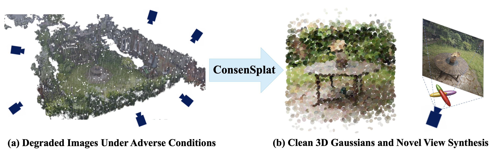
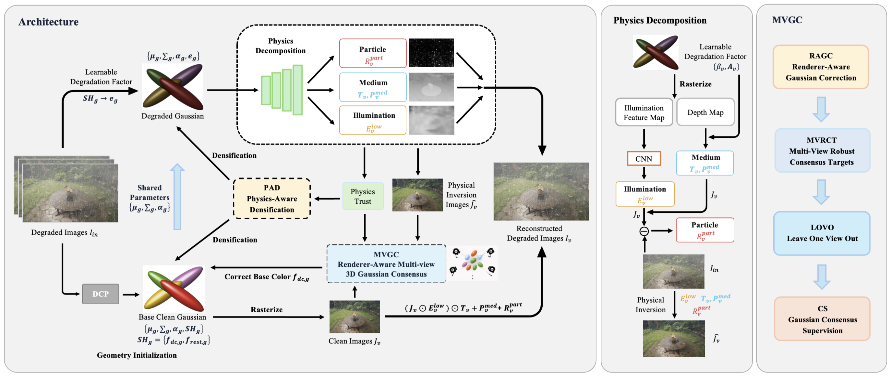
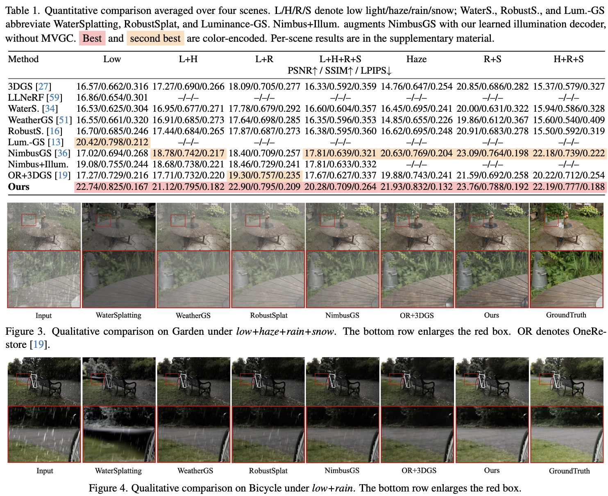
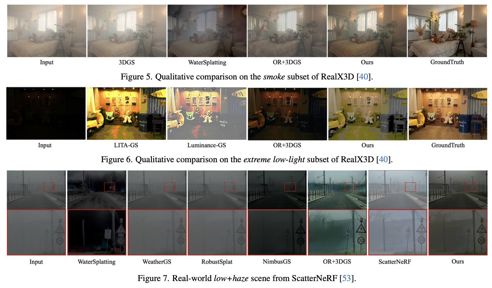

ConsenSplat: Robust 3D Gaussian Splatting across Diverse Adverse Conditions
CVPR 2027 · Submitted
†Keio University ††NEC
hwx2955@keio.jp, {yogino, ito-atsushi}@nec.com, aoki@elec.keio.ac.jp

Abstract
Reconstructing clean 3D scenes from multi-view images degraded by low light, continuous scattering media, and transient particles remains challenging. Even when a physically structured 3D Gaussian Splatting model reconstructs degraded observations, view-specific contamination can be absorbed into the Gaussians’ canonical colors. We introduce ConsenSplat, whose core is Renderer-aware Multi-view Gaussian Consensus (MVGC). MVGC attributes physical-inversion residuals to contributing Gaussians, robustly aggregates candidate colors across source views, and supervises canonical DC colors using leave-one-view-out targets. We combine MVGC with a physical compound image-formation model using decoder-predicted illumination, medium transmission, and particle residual, together with Physics-aware Densification. Across a synthetic dataset comprising four scenes and seven settings and a real-world dataset comprising six scenes and two settings, our method achieves state-of-the-art results under low-light, combined low-light and adverse weather, and real-world conditions, while remaining competitive under synthetic weather-only conditions. For example, average PSNR increases from 17.81 dB (NimbusGS) to 20.28 dB under synthetic low+haze+rain+snow and from 14.98 dB (OR+3DGS) to 17.45 dB under real-world smoke. Qualitative evaluations on synthetic and real-world scenes further demonstrate our effectiveness under diverse adverse conditions. Controlled ablations also support the role of MVGC in our framework.
Method

Results


Visualization
Reconstruction comparison under combined low-light, haze, rain, and snow degradation.
Clean reconstruction and the predicted illumination, transmission, and particle components.